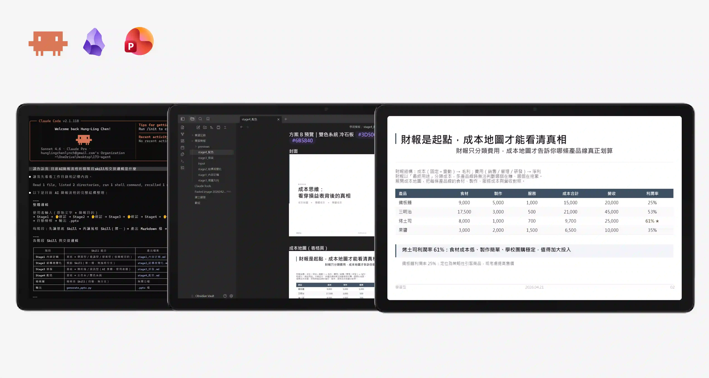
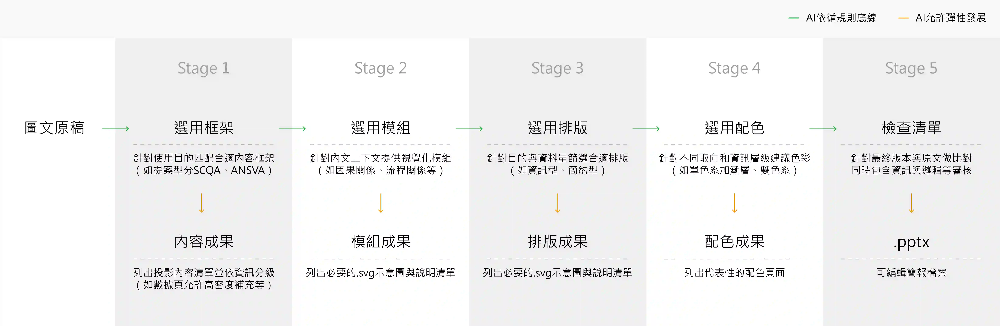
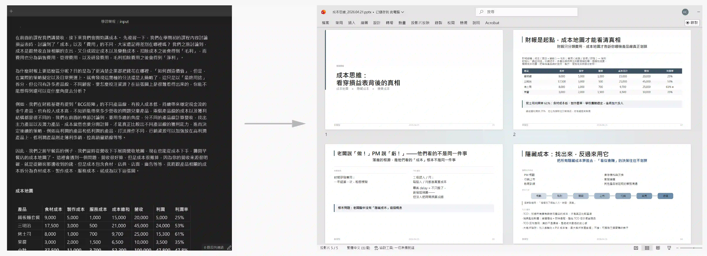
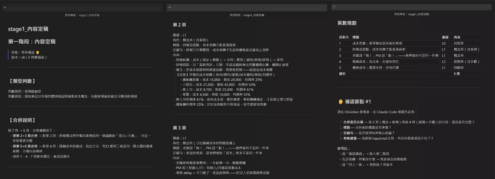
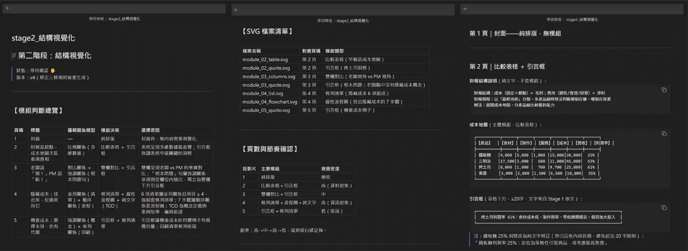
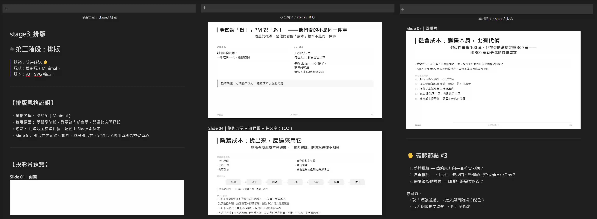
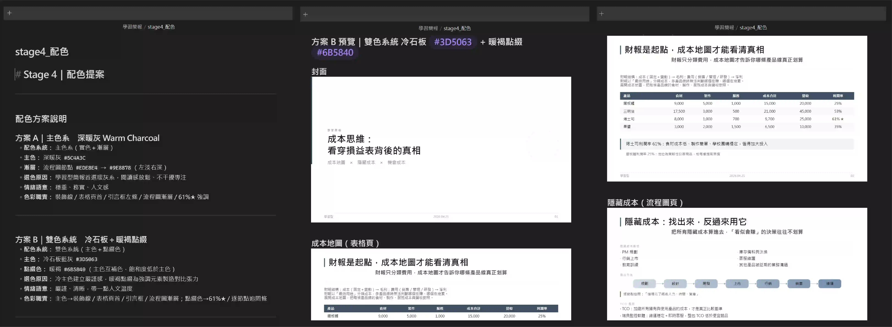

AI工具:簡報製作助手
這是一套能能依簡報情境與受眾，將長篇圖文自動轉譯為近乎可交付的簡報自動化流程。不同於 LLM 簡報生成常出現的內容失焦、邏輯斷裂、版面鬆散，導致大量後期重修，此 AI 簡報助手透過分階段校正與結構控制，確保上下文一致，並匹配最合適的傳達架構與排版方式，最終產出圖文完整且可編輯的.pptx。
該簡報助手處於測試優化階段，目標減少token使用量、數據視覺化，因此尚未完全封包進入系統，但仍可以此一窺目前的流程設計方式。


從原文到簡報/
使用 Claude code 建置，以 Obsidian 作為階段展示，最終以 PowerPint 輸出做後期微調， 此方式能在可控且可預期品質的方向下，大幅降低長篇圖文製作成簡報的時間。

Stage1 內容成果/
根據簡報情境，遵循通用規則＋傳達框架。
(1)通用規則：
-資訊分級(主張、說明、補充等層級)
-禁止或限制(如重複同語意文字、標題或定錨句字數限制)
(2)傳達框架：
-提案型(SCQA、 ANSAVA框架等)
-學習型(概念、流程、比較、案例、結論等)
-會議型(依照會議前中後，如Agenda、背景、任務、負責人、截止時間等)

Stage2 模組成果/
以觀看者能更直覺吸收資訊為判斷前提。
-是否符合邏輯關聯( 並列、順序、層級、對比、因果、比例)
-是否有視覺化必要(邏輯清晰且非純敘述)
-選擇合適的視覺化模組方向
-生成文字式SVG

Stage3 排版成果/
遵循通用規則＋傳達框架。
(1)通用規則：
-核心原則(對齊、一致、層次、留白)
-禁止或限制(畫布尺寸、頁碼規範等)
(2)傳達框架：
-簡約型(輕、無序)
-資訊型(數字份量感、有序)

Stage4 配色成果/
輔助資訊層級，讓觀看者更快理解內容結構，遵循通用規則＋傳達框架。
(1)通用規則：
-核心原則(一種顏色一種語意、可讀性優先)
-禁止或限制(超過3種色系同一頁、大面積使用螢光色)
(2)傳達框架：
-主色系(明確視覺方向感)
-雙色系(呈現對比與多層次視覺)